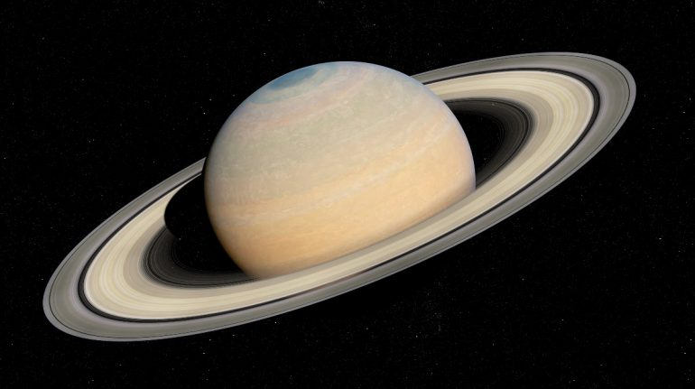

Jupiter
Júpiter es el planeta con mayor masa del sistema solar: equivale a unas 2,48 veces la suma de las masas de todos los demás planetas juntos. A pesar de ello, no es el planeta más masivo que se conoce: más de un centenar de planetas extrasolares que han sido descubiertos tienen masas similares o superiores a la de Júpiter.Júpiter también posee la velocidad de rotación más rápida de los planetas del sistema solar: gira en poco menos de diez horas sobre su eje. Esta velocidad de rotación se deduce a partir de las medidas del campo magnético del planeta. La atmósfera se encuentra dividida en regiones con fuertes vientos zonales con periodos de rotación que van desde las 9 h 50 min 30 s, en la zona ecuatorial, a las 9 h 55 min 40 s en el resto del planeta.El planeta es conocido por una enorme formación meteorológica, la Gran Mancha Roja, fácilmente visible por astrónomos aficionados dado su gran tamaño, superior al de la Tierra. Su atmósfera está permanentemente cubierta de nubes que permiten trazar la dinámica atmosférica y muestran un alto grado de turbulencia.

Saturno
Saturno es un planeta visiblemente achatado en los polos con un ecuador que sobresale formando un esferoide ovalado. Los diámetros ecuatorial y polar son de 120 536 y 108 728 km, respectivamente. Este efecto es producido por la rápida rotación del planeta, su naturaleza fluida y su relativamente baja gravedad. Los otros planetas gigantes son también ovalados pero en menor medida.Saturno posee una densidad específica de aproximadamente 690 kg/m³, siendo el único planeta del sistema solar con una densidad inferior a la del agua (1000 kg/m³).La atmósfera del planeta está formado por un 96 % de hidrógeno y un 3 % de helio. El volumen del planeta es suficiente como para contener 740 veces la Tierra, pero su masa es solo 95 veces la terrestre, a causa de la ya mencionada baja densidad media. Urano
Como los otros planetas gigantes, Urano tiene un sistema de anillos, una magnetosfera, y numerosos satélites. El sistema de Urano tiene una configuración única respecto a los otros planetas puesto que su eje de rotación está muy inclinado, casi hasta su plano de revolución alrededor del Sol. Por lo tanto, sus polos norte y sur se encuentran en donde la mayoría de los otros planetas tienen el ecuador.Vistos desde la Tierra, los anillos de Urano dan el aspecto de que rodean el planeta como una diana, y que los satélites giran a su alrededor como las agujas de un reloj, aunque en 2007 y 2008, los anillos aparecían de lado. El 24 de enero de 1986, las imágenes del Voyager 2 mostraron a Urano como un planeta sin ninguna característica especial de luz visible e incluso sin bandas de nubes o tormentas asociadas con los otros gigantes.Sin embargo, los observadores terrestres han visto señales de cambios de estación y un aumento de la actividad meteorológica en los últimos años a medida que Urano se acerca a su equinoccio. Las velocidades del viento en Urano pueden llegar o incluso sobrepasar los 250 m/s (900 km/h).

Neptuno
Neptuno es un planeta dinámico, con manchas que recuerdan las tempestades de Júpiter. La más grande, la Gran Mancha Oscura, tenía un tamaño similar al de la Tierra, pero en 1994 desapareció y se ha formado otra. Los vientos más fuertes de cualquier planeta del sistema solar se encuentran en Neptuno.Neptuno tiene una composición bastante similar a la del planeta Urano, y ambos tienen composiciones que difieren mucho de los demás gigantes gaseosos, Júpiter y Saturno. La atmósfera de Neptuno, como las de Júpiter y de Saturno, se compone principalmente de hidrógeno y helio, junto con vestigios de hidrocarburos y posiblemente nitrógeno. Contiene una mayor proporción de hielos, tales como agua, amoníaco y metano.
Los científicos muchas veces categorizan Urano y Neptuno como gigantes helados para enfatizar la distinción entre estos y los gigantes de gas Júpiter y Saturno.El interior de Neptuno, como el de Urano, está compuesto principalmente de hielos y roca. Los rastros de metano en las regiones periféricas exteriores contribuyen para el aspecto azul vívido de este planeta.

anterior home siguiente